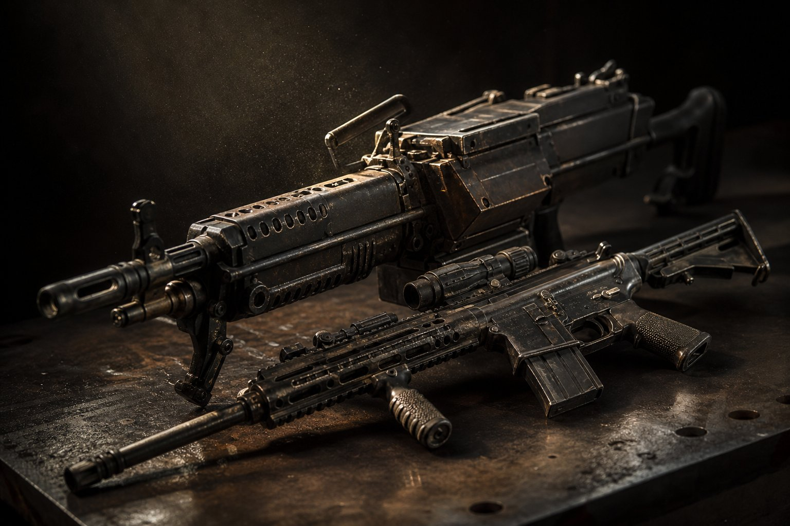
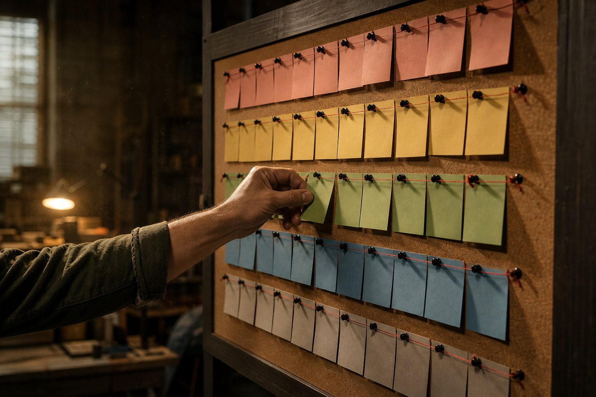

1. Méthodologie — croiser les sources
Cette tier list croise :
- Les notes de la Saison 7 (MoreFun Studios, 16 septembre 2026) — changements de recoil, headshots, portée, caps.
- Reddit r/ArenaBreakoutInfinite — tests communautaires, retours d'expérience de milliers de raids.
- Bases de données — arenabreakout-infinite.com (patch 1.0.0.142.19), tier lists mmoexp/topuplive/bittopup.
- YouTube & créateurs — builds validés en vidéo, statistiques réelles.
Tier ≠ religion
Une S-tier mal moddée perd contre une B-tier maîtrisée. Ce classement est un point de départ, pas un ordre de mission.
2. Tier List complète — Saison 7 Utopia
3. Statistiques officielles par arme
Le classement en tier est communautaire. Les chiffres ci-dessous ne le sont pas : ils sont repris du wiki officiel d'Arena Breakout Infinite (modèle de données WeaponData et fiches armes). Ce sont les caractéristiques brutes de l'arme — utile pour vérifier une intuition, inutile pour décider qui gagne un duel.
| Arme | Calibre | Mode de tir | Recul vertical | Ergonomie | Précision | Portée effective | Cadence (RPM) | Poids |
|---|---|---|---|---|---|---|---|---|
| M24 | 7.62×51mm | Bolt-Action | 7 | 39 | 90 | 120 | 30 | 4,40 |
| SJ16 | .338 Caliber | Bolt-Action | 11 | 32 | 90 | 125 | 26 | 6,48 |
| SVDS | 7.62×54mm | Semi | 43 | 44 | 91 | 83 | 225 | 7,36 |
| M110 | 7.62×51mm | Semi | 58 | 58 | 91 | 80 | 300 | 6,97 |
| MK14 | 7.62×51mm | Semi, Full | 57 | 59 | 69 | 55 | 700 | 8,14 |
| T192 | 5.8×42mm | Semi, Full | 66 | 84 | 60 | 41 | 750 | 2,50 |
| AN-94 | 5.45×39mm | 2 Round Burst, Semi, Full | 60 | 59 | 72 | 57 | 630 | 4,40 |
| M14 | 7.62×51mm | Semi | 44 | 45 | 76 | 66 | 350 | 5,34 |
| RPK-16 | 5.45×39mm | Semi, Full | 73 | 51 | 57 | 53 | 750 | 6,63 |
| MCX | 5.56×45mm | Semi, Full | 77 | 80 | 30 | 30 | 700 | 2,61 |
| P90 | 5.7×28mm | Semi, Full | 73 | 72 | 20 | 36 | 1000 | 3,73 |
| Vector .45 | .45 Caliber | 2 Round Burst, Semi, Full | 62 | 71 | 21 | 25 | 1100 | 3,28 |
| MPX | 9×19mm | Semi, Full | 68 | 81 | 25 | 33 | 850 | 3,77 |
| MP5 | 9×19mm | Semi, Full | 70 | 74 | 22 | 28 | 750 | 3,89 |
| H416 | 5.56×45mm | Semi, Full | 72 | 73 | 39 | 32 | 860 | 4,42 |
| AUG | 5.56×45mm | Semi, Full | 77 | 68 | 59 | 46 | 750 | 3,88 |
| FAMAS | 5.56×45mm | 3 Round Burst, Semi, Full | 73 | 51 | 45 | 40 | 900 | 3,31 |
| AK-12 | 5.45×39mm | 3 Round Burst, Semi, Full | 69 | 60 | 43 | 55 | 730 | 3,89 |
| AKM | 7.62×39mm | Semi, Full | 50 | 44 | 38 | 54 | 600 | 3,56 |
| FAL | 7.62×51mm | Semi, Full | 52 | 43 | 42 | 51 | 630 | 6,93 |
| M4A1 | 5.56×45mm | Semi, Full | 71 | 57 | 41 | 49 | 750 | 5,57 |
| S12K | 12×70mm | Semi | 30 | 66 | 10 | 14 | 200 | 4,85 |
| AKS-74U | 5.45×39mm | Semi, Full | 52 | 44 | 29 | 33 | 500 | 4,93 |
| VSS | 9×39mm | Semi, Full | 65 | 57 | 44 | 26 | 850 | 6,22 |
Source : wiki officiel ABI, modèle de données WeaponData. L'échelle est identique pour toutes les armes : le recul se compte vers le haut (valeur haute = plus de recul), la précision et la portée effective sont exprimées sur l'échelle interne du jeu, la cadence en tours par minute. Ces valeurs bougent à chaque patch — l'armurerie en jeu reste la référence.
Comment lire ce tableau face à la tier list
- Le M24 et le SJ16 cumulent précision 90 et portée effective 120-125, avec un recul vertical de 7 et 11 — les deux valeurs les plus faibles de la liste. Ils sont lents (26-30 RPM). C'est le profil « un tir, une décision ».
- Le T192 affiche l'ergonomie la plus élevée de tout l'échantillon (84) avec un poids de 2,50 — l'un des plus légers. Sur le papier, c'est l'arme la plus maniable ; en pratique, une précision de 60 et une portée de 41 la limitent au combat rapproigné et à la visée rapide.
- Le Vector .45 et le MPX combinent cadence (1100 et 850 RPM) et ergonomie (71 et 81) : ils encaissent la pression au corps à corps, mais leur précision (21 et 25) et leur portée (25 et 33) interdisent le duel à distance.
- Le FAL est le plus lourd de l'échantillon (6,93) avec 43 d'ergonomie — le retour de manivelle se paie. Son canon long est en revanche son atout : 51 de portée effective pour un 7.62×51mm.
- Le S12K n'a que 10 de précision et 14 de portée : c'est normal, ce n'est pas une arme de précision. Il compte sur le volume de pellets et sur l'agglomération.
Ce que le wiki ne documente pas encore
Le A545 et l'AK-15SC, les deux fusil de la Saison 7 Utopia, ne figurent pas encore dans le modèle de données du wiki. Les valeurs de leurs fiches sur ce site proviennent donc d'autres sources, et restent à confirmer — nous les signalons comme telles plutôt que de les faire passer pour des données officielles. De même, le prix d'une arme et sa disponibilité en raid ne figurent dans aucune base publique : ce sont des données de terrain, pas des chiffres publiés.
4. Tier list interactive
Le classement ci-dessus est un consensus communautaire : la moyenne de plusieurs tier lists publiques recoupées en novembre 2026, les plus récentes pesant davantage. Aucune de ces sources n'est l'éditeur.
Ci-dessous vous pouvez reclasser les armes vous-même : glissez une arme d'un tier à l'autre, ou au clavier sélectionnez-la et appuyez sur Espace pour la faire descendre d'un cran. Votre classement est enregistré dans votre navigateur et n'affecte pas la base du site.


5. Ce qui crée ce meta
- A545 entre dans la cour des grands : pares du U191/H416 dès J1.
- Caps d'équipement : Normal T4 → les mun T4 deviennent le quotidien de tous.
- Headshot buff : M24 bolts deviennent des sentences, DMR peeks récompensées.
- Attachements saisonniers : PCC9/FAL/M110/MPX sortent de la cave.
- RNG T5/T6 supprimé : les high-tier muns ne ratent plus « par chance ».
6. Tier par carte (l'onglet qui compte)
| Carte | Meta arme |
|---|---|
| Farm / Valley (Infected) | A545, AK-15SC, Vector .45, PCC9 |
| Airport (Heavy Infected) | A545, M110 Binary, RPK-16 |
| Northridge | M24, SJ16, H416 longue portée |
| TV Station / Armory | P90, MPX Vulcan, shotgun USAS-12 |
| Routes zombies (Infected Zone) | Dum-Dum 9mm, P90, RPK-16 (horde clearing) |
7. Comparateur d'armes
Mettez deux armes côte à côte : cadence, dégâts, portée, recul, ergonomie, prix, munitions compatibles et rapport coût / performance. Les valeurs proviennent de la base locale du site (patch 1.0.0.142.19). Le DPS est un estimateur dérivé, pas une valeur publiée.

Chargement des données…
Le mot du coach
Le meta S7 récompense la polyvalence : A545 partout, un Vector en poche, et des muns adaptées. C'est ça, gagner Fortnite Kamona.